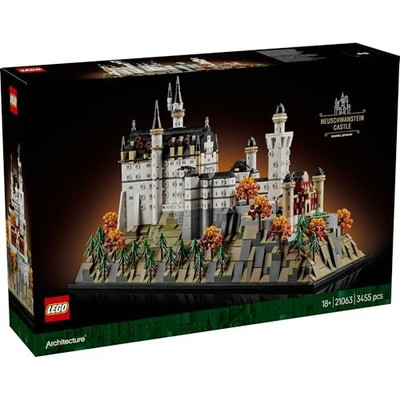

|
|
|---|---|
| Flower Bouquet | Flower Arrangement |
The sets above, the Flower Bouquet and the Flower Arrangement, are a part of Lego's Botanical collection. The flowers in the sets were designed to resemble real flowers, and the set creaters even had to get creative and use bizzare or custom pieces to make the flowers look realistic. Thanks to the beautiful artisty of the sets, these sets work great as decoration in your room or as a statement piece on your dining table. The bright colors work well together to create a joyful and welcoming enverionment in every space they are in. And, both of these sets are going to retire soon, meaning you should purchase them before it's too late.
 |
 |
|---|---|
| Neuschwanstein Castle | Notre-Dame de Paris |
These sets are both apart of Lego's Architecture collection. They both have immense detail to them and any fan of the real buildings should consider adding these builds to their own collection. And even though these sets are not at the same scale as the real buildings, you can still get a taste of a european vacation from the comfort of your own home by having them out on display. Additionally, the Neuschwanstein Castle set is currently out of stock, so this could be the perfect chance to buy it. I am also selling the Notre-Dame de Paris set at a discounted price, so if you have been wanting the set but waiting for it to go on sale, now is your chance to get it!
Any purchase made from this collection goes directly towards my college fund. You purchase will make such a positive impact on my life, and I will be forever thankful for any contributions made!